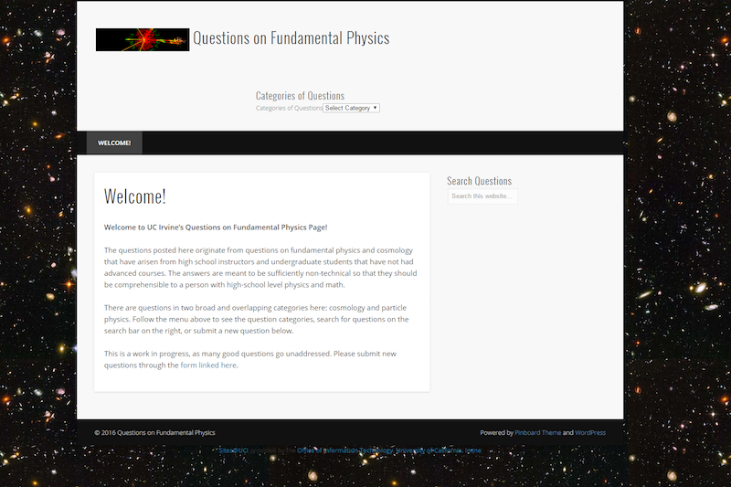

My team and I redesigned a website for a physics and cosmology professor at UCI. The purpose of this website was to allow high school students and teachers to ask questions about fundamental physics.
The Goal
The client's current website was lacking engagement and user-friendliness. Our goal was to revamp the website so that people who are interested in this topic could have a engaging user experience while obtaining useful information along the way.

Original website
Steps to Achieve Goal
Meet with client and gather his requirements and expectations
Draw and formulate several solutions
Talk amongst team about solutions and narrow down to one
Present solution to client
Begin first phase of development
Create a usability test for potential users
Contact teachers and students who would be willing to participate in test
Conduct usability test and analyze feedback from participants
Use results from test to make improvements to website
Mockups using Sketch, Usability testing, Technical Writing
Lessons Learned
I learned how to create mockups using Sketch, how to conduct usability testing, and how to analyze the results from usability testing to improve features on the website.